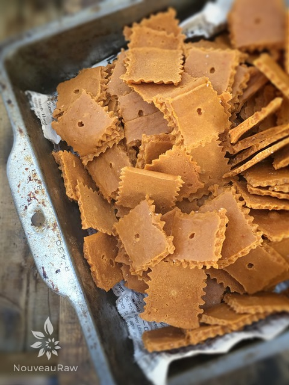
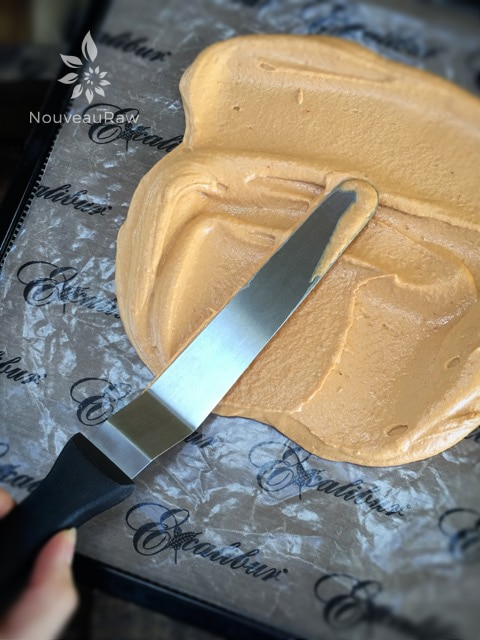
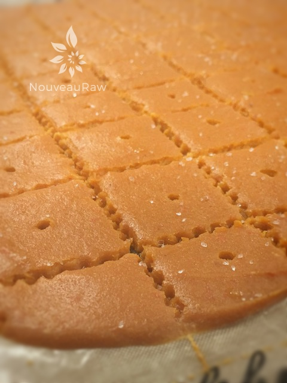

Cheese Nip Crackers

~ raw, vegan, gluten-free ~
There is something special about these Cheese Nip Crackers… looking all spiffy with their charmingly scalloped edges. As the light shimmers over the top of them, you will find flecks of sea salt adhering in perfect proportion to each dimpled square… ooooh, I need some now!!!
If you’ve ever tried Cheez-Its (a commercially made cracker) you know how salty and cheesy they are. They are highly addictive. Well, I found them to be anyway.
I was able to duplicate the flavor with a little sea salt and nutritional yeast. It’s kind of like magic. It did take a few more ingredients to pull this off but the key ingredient is the nutritional yeast. Without it… well, there just wouldn’t be a raw, vegan, Cheese Nip recipe.
The original cracker is made from wheat flour, vegetable oil, sharp cheddar cheese, salt, and spices. I was able to closely replicate those golden squares without gluten, oil, or dairy.
A high-powered blender is recommended but not required. If you own a lower-end model, that’s ok… you will just want to blend this in stages so it doesn’t overwhelm the motor on the blender.
However, if you do own a Vitamix with a tamper, you can blend everything together at once. I wrote the instructions with the thought that you don’t own a high-powered one. It’s time my friend… hope up and get busy in that kitchen. I can’t wait to hear your thoughts on this. Many blessings, amie sue
yields roughly 100 (1.5 x 1.5″) crackers
- 1 cup raw cashews, soaked 2+ hours
- 1 large red bell pepper, seeded & roughly chopped
- 2 Tbsp fresh lemon juice
- 1/2 cup nutritional yeast flakes
- 1/2 tsp red chili pepper flakes
- 1/2 tsp Himalayan pink salt
- 2 cups zucchini, peeled & diced
- 1 cup raw, fine almond flour
- 2 Tbsp ground flax seeds
Preparation:
- After soaking the cashews, drain and discard the soak water.
- Chop the red pepper into small pieces and add to a blender with the lemon juice. Blend until smooth.
- Add the cashews, nutritional yeast, red chili pepper flakes, and salt and again blend until smooth.
- Doing it in stages like this helps you to get the smooth consistency you need without overheating it.
- Add in the zucchini, almond flour, and ground flax seeds, until well blended.
- Pour the batter onto non-stick dehydrator sheets, spreading it evenly, between 1/8 – 1/4″ thickness.
- Score into 1-inch squares (a pastry wheel or pizza wheel work great).
- Use a toothpick or small end of a chopstick to punch a hole into the center of each square.
- Sprinkle coarse sea salt on top.
- Dehydrate at 145 degrees (F) for 1 hour, then reduce temp to 115 degrees (F) and dehydrate for approx. 4 hours.
- At this point, if they are dry enough, flip the non-stick sheet over so the cracker is now sandwiched between the non-stick sheet and the mesh sheet.
- Peel the non-stick sheet off, leaving the cracker on the mesh sheet. This is a good time to score the crackers into the desired shape and sprinkle a little extra salt on top.
- Continue dehydrating for another 16 hours or until crisp.
- Once dry and cooled, store in an airtight container for 7-14 days.
Culinary Explanations:
- Why do I start the dehydrator at 145 degrees (F)? Click (here) to learn the reason behind this.
- When working with fresh ingredients it is important to taste test as you build a recipe. Learn why (here).
- Don’t own a dehydrator? Learn how to use your oven (here). I do however truly believe that it is a worthwhile investment. Click (here) to learn what I use.

Spread the batter to roughly 1/4″ thick. Score into small cracker shapes and slip the tray into the dehydrator.

© AmieSue.com